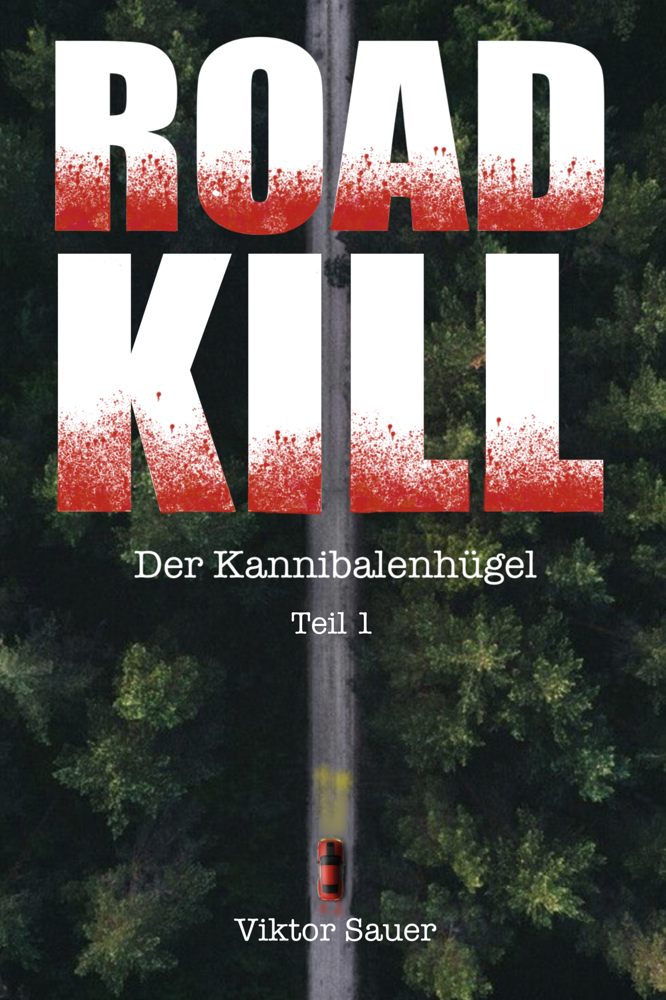

Der Kannibalenhügel
"Das Grauen beginnt"
Vier Freunde. Eine Autopanne. Eine kannibalistische Familie.
Was als Wochenendausflug zum Crystal Lake beginnt, wird für Alex, Mia, Jake und Tiffany zum puren Albtraum.
Nach einer Autopanne während eines Unwetters suchen sie Zuflucht bei einer abgelegenen Familie auf dem Hügel.
Doch hinter der falschen Gastfreundschaft verbirgt sich etwas Monströses.
Der Auftakt der ROADKILL-Serie ist nichts für schwache Nerven.